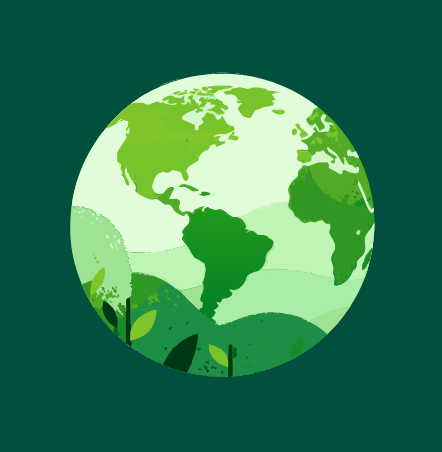

Tema 1. Conceptos fundamentales de la ecología
Ir al inicio

La ecología es la rama de la biología que estudia las relaciones de los seres vivos entre sí y con el medio ambiente en el que habitan. Su objetivo es comprender cómo interactúan los organismos con su entorno y cómo los cambios ambientales pueden afectar su supervivencia.
- Conceptos importantes:
- Ecología: estudia las relaciones entre los seres vivos y su ambiente.
- Medio ambiente: conjunto de elementos naturales y condiciones que rodean a los organismos.
- Organismo: ser vivo que habita en un ambiente determinado.